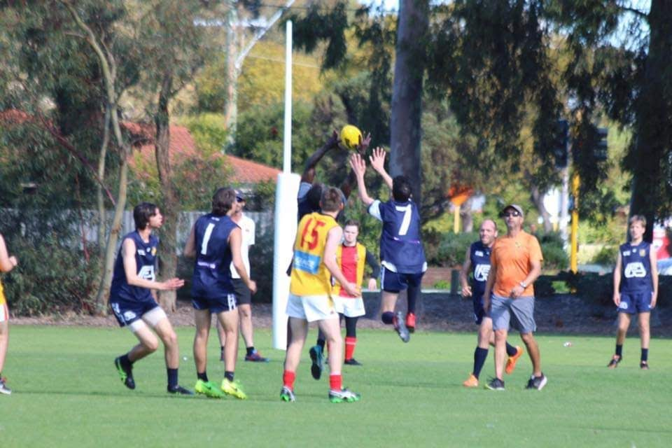

Less than three years ago, in 2017, Willetton FC opened up an Integrated team for individuals with disabilities such as High-Functioning Autism to play footy in a safe environment. We joined the Western Australian Amateur Integrated League in 2018 after training with a team of 6 throughout 2017. Our first league game was a loss to the reigning premiers, Coolbinia, in Round 1 of the 2018 season. We finished last season with 4 wins and 8 losses, but exploded out of the blocks with 8 wins in our first 10 games this year, before cruising into the grand final against Coolbinia. Although ultimately unsuccessful, we developed a brand of football that was exciting and dangerous and will ensure we won't go away anytime soon.
In this post, I want to discuss what was a brilliant season and what we need to do to get that first premiership for Willetton. We'll be conducting interviews with the coach, Keilan Marshall, as well as some of the stars of Willetton. Let's get started!
The Off-Season
As a club, we had an absolutely brilliant off-season, bringing in a total of 7 new players (including Daniel, Trent, Richo, Tyson, Ash). More would join throughout the course of the season, including Brad and Declan. Last year we struggled for numbers, and we had to borrow players from every team we played against. While that happened again this year, it happened less often and to a lesser extent, so I'd just like to acknowledge right now the contribution those players put in.
We started training during January, however I missed out on the first 2 weeks as I was in Brisbane, representing WA at the Australian Space Design Competition (a story for another time). However, I came back in time to meet and welcome some of the new players, and I was optimistic (unlike Brother Trent) that we could make a big impact in the integrated league this season.